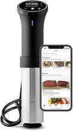
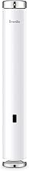
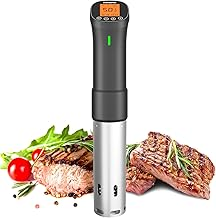
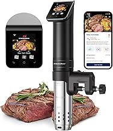
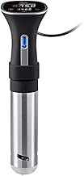

This page focuses on circulators for consistent poultry, batch cooking, and weeknight reliability, so the recommendations favor the buyers most likely to care about that use case instead of generic one-size-fits-all advice.
See Main RankingsWe compare real products, not imaginary winners. Every Amazon link uses affiliate tag brazenprodu01-20, which helps keep the site running at no extra cost to you.

⭐ 4.5 · $168.96
The mainstream benchmark with a big community and dependable app support. Built for shoppers researching circulators for consistent poultry, batch cooking, and weeknight reliability rather than the whole category at once.

⭐ 4.3 · $249.95
Tiny, powerful circulator with smart guided cooking and fast heat-up. Built for shoppers researching circulators for consistent poultry, batch cooking, and weeknight reliability rather than the whole category at once.

⭐ 4.5 · $70.72
Value favorite that delivers strong wattage without flagship pricing. Built for shoppers researching circulators for consistent poultry, batch cooking, and weeknight reliability rather than the whole category at once.

⭐ 4.5 · $169.99
Quiet circulator with a polished stainless build and steady performance. Built for shoppers researching circulators for consistent poultry, batch cooking, and weeknight reliability rather than the whole category at once.

⭐ 4.3 · $79.98
Low-cost pick for buyers testing the sous vide waters. Built for shoppers researching circulators for consistent poultry, batch cooking, and weeknight reliability rather than the whole category at once.
| Product | Positioning | Why It Stands Out |
|---|---|---|
| Anova Culinary Precision Cooker 3.0 | Budget | The mainstream benchmark with a big community and dependable app suppo |
| Breville Joule Turbo | Mid-Range | Tiny, powerful circulator with smart guided cooking and fast heat-up. |
| Inkbird ISV-200W | Mid-Range | Value favorite that delivers strong wattage without flagship pricing. |
| KitchenBoss WiFi Sous Vide Cooker | Premium | Quiet circulator with a polished stainless build and steady performanc |
| Monoprice Strata Home Sous Vide | Premium | Low-cost pick for buyers testing the sous vide waters. |
When comparing sous vide machines, ignore lazy ranking pages that only repeat spec sheets. Start with your actual use case: circulators for consistent poultry, batch cooking, and weeknight reliability. That one detail usually determines whether compact convenience, stronger output, or premium features matter most.
Next, look at ownership friction. The right product is the one you will keep using, cleaning, storing, and recommending six months from now. That means build quality, support reputation, and ease of use matter more than marketing claims.
Finally, buy enough quality once. The cheapest option often becomes expensive when it disappoints early, while the most expensive option is only worth it if its advantages actually show up in your real routine.
Yes, when you follow proper temperature and timing guidance. Precision is a strength of sous vide, but food safety still depends on using the method correctly.
Not necessarily. Many home cooks use quality zip bags and water displacement successfully, though vacuum sealers are better for frequent use and storage.
Around 800 to 1100 watts is enough for most home tasks. Bigger baths and faster heat-up benefit from more power, but app quality and clamp design also matter.
Joule often wins on compact design and app polish, while Anova has a broader install base and a familiar ecosystem. The better pick depends on your workflow.
Steak, chicken breast, pork chops, eggs, and meal-prep proteins benefit quickly because precise doneness is easy to repeat.
Usually yes. Sous vide handles internal doneness, while a final sear adds the texture and flavor most people expect from finished meat.